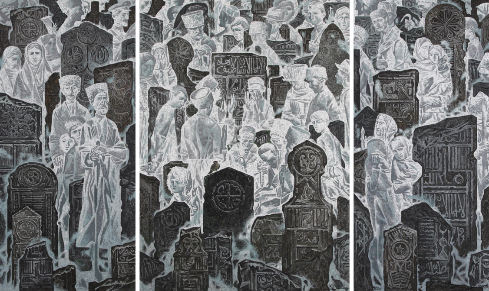
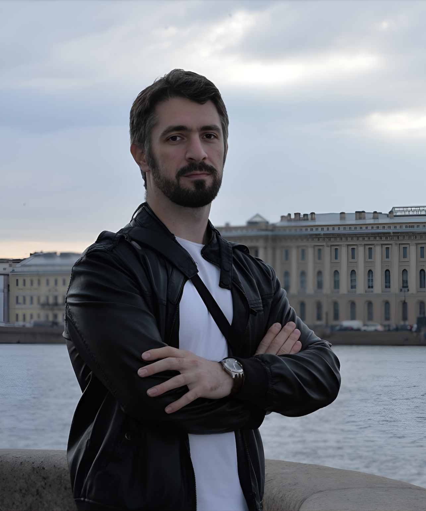

02

Рустам Хожаевич Яхиханов — член Союза художников, заслуженный художник Чеченской Республики. Родился 20 июля 1986 года в Грозном (Чечено-Ингушская АССР). Начальное художественное образование получил в ДШИ №14. В 2005 году поступил на факультет живописи Санкт-Петербургского государственного академического института живописи, скульптуры и архитектуры имени Ильи Репина, где обучался в мастерской монументальной живописи под руководством Александра Быстрова. Его талант был отмечен многочисленными наградами за успешную творческую деятельность.
В настоящее время Рустам является старшим преподавателем кафедры рисунка факультета графики в Академии художеств имени И.Е. Репина, ведёт активную выставочную деятельность, участвует в проектах международного уровня, а также проводит мастер-классы и курирует художественно-образовательные программы.
Рустам Яхиханов работает в жанрах живописи и графики. В детстве он пережил две войны, и эти события значительно повлияли на творчество в начале его пути. Позже он начал обращаться к теме культуры, традиций и истории родного региона. Его дипломная работа «Земля моих предков» является самой большой дипломной картиной за всю историю Академии художеств (2,5×13 метров). Особое внимание в творчестве художника занимает работа с формой и пространством: даже в камерных произведениях чувствуется монументальный размах, он хорошо работает с многофигурными композициями.
[Интервью: Раскоша Екатерина]